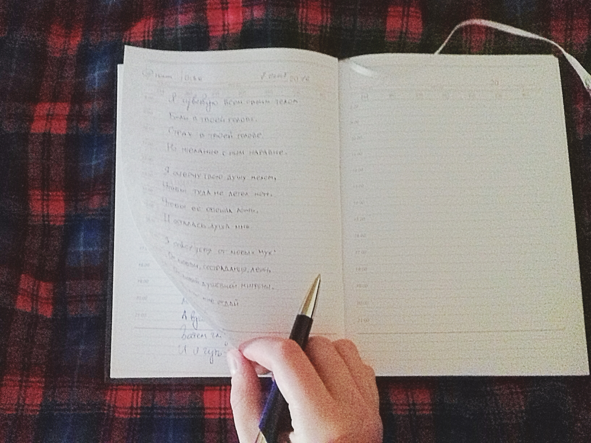

Valeryia Semianchuk

| Music | |
|---|---|
I learnt to play various musical instruments, - acoustic guitar, percussion, piano, accordion - but my beloved one remains bass-guitar. My parents gave it to me as a present when I was 14 when I was attending rock-studio and played studio bass-guitar. I was delighted and decided to start my own band. |
| Writing | |
|---|---|
|  | Another thing I enjoy doing and, I think, am good at, is writing short stories, poems, and songs. My fantasy always worked remarkably good, and since I learnt how to write, I did that every time I wanted. Although most of my peace of art I write in Russian, I have some written in Belarusian or English. |